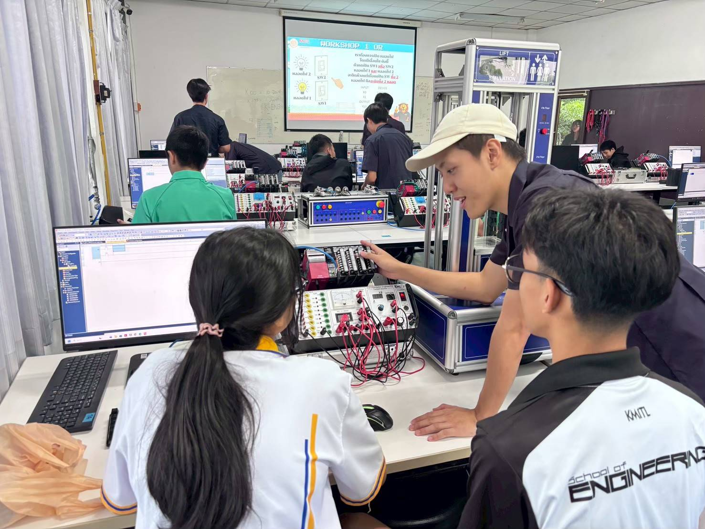
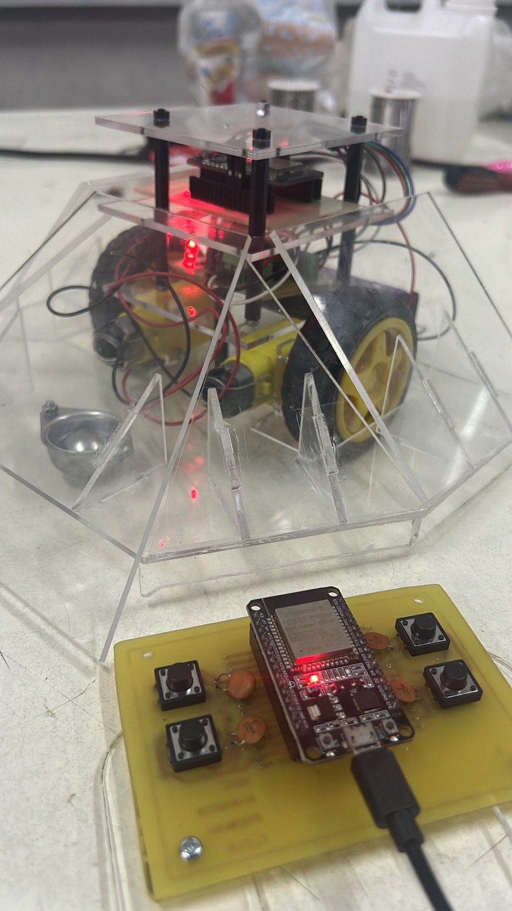

About Me

Puttimate Polkerd (Focus)
An Engineering Student at King Mongkut's Institute of Technology Ladkrabang (KMITL).
An Engineering Student at King Mongkut's Institute of Technology Ladkrabang (KMITL).
Designed and simulated an automated control system using Ladder Logic in GX Works3. The example shown in the video is a "Traffic Light Control Program," which applies self-holding circuits and timers to create an automated, sequential, and looping operation (Sequence Control).
These foundational PLC programming skills can be practically applied to various real-world industrial automation systems, such as conveyor belts, automated packaging machines, part-sorting systems, and manufacturing processes.

Served as a staff member for the PLC workshop at the K-Engineering event, acting as a teaching assistant and providing guidance on Ladder Logic programming to attendees, including students and parents.
Throughout the event, assisted participants in understanding the fundamentals of automated control systems and ensuring they could safely and correctly operate the practical PLC training kits.

Participated in the Freshy Robot (Battle Bot) competition as a core team member. Primarily responsible for designing and assembling the robot's main control board and the remote controller board.
Additionally, collaborated on the mechanical design of the robot's structure to ensure durability and optimize combat performance in the arena.
68011768@kmitl.ac.th